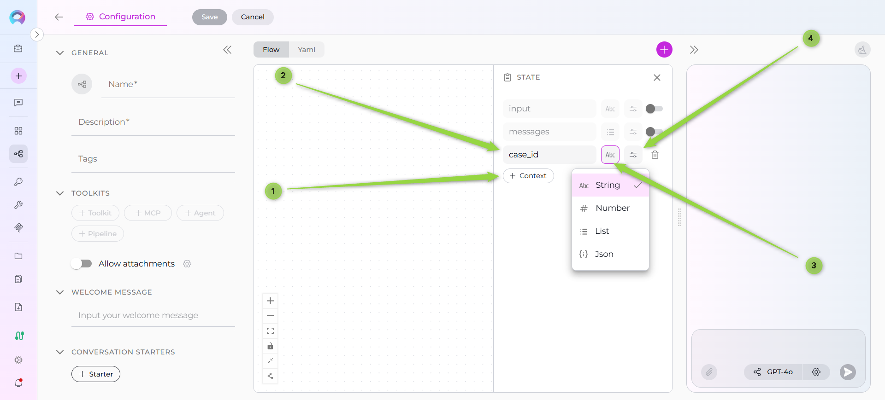

Pipeline States¶
State is the memory of your pipeline—a structured storage system that holds all information gathered and used during pipeline execution. Think of state as a collection of variables that persist throughout your pipeline's lifecycle, allowing different nodes to share data and build upon each other's work.
What is Pipeline State?¶
Pipeline state represents the current condition of your workflow at any given moment. It stores:
- User input from conversations
- Conversation history (messages exchanged)
- Extracted data from external systems
- Intermediate results from processing nodes
- Configuration values used across multiple steps
Why State Matters
Without state, each node would operate in isolation with no memory of previous steps. State enables your pipeline to maintain context, pass data between nodes, and build complex workflows that accumulate knowledge as they execute.
Default States¶
Every pipeline automatically includes two special default states that are always available:
input State¶
Type: str
Purpose: Holds the most recent message from the user
The input state represents short-term memory—it always contains the latest user message. When a user types something new, input is updated to reflect that new message.
messages State¶
Type: list[BaseMessage]
Purpose: Stores the complete conversation history
The messages state represents long-term memory—it contains the entire conversation between the user and the pipeline, including all user inputs and pipeline responses.
input vs messages
- Use
inputwhen you only need the current user message - Use
messageswhen you need conversation context or history - You can use both together:
input: ["input", "messages"]
Managing States in Flow Mode¶
Starting with ELITEA 2.0.0 Beta, pipeline states are managed through an intuitive sidebar interface in Flow mode.
Accessing the States Sidebar¶
- Open Flow Editor: Navigate to your pipeline's Configuration tab
- Click States Button: Located under the + button for adding nodes
- States Sidebar Opens: A resizable panel appears on the right side
{kind=link}
Flow Mode Only
The States button is only visible in Flow mode. In YAML mode, states are defined directly in the YAML configuration.
Default States Display¶
When you open the States sidebar, you'll see the two default states:
- input - Toggle to activate/deactivate
- messages - Toggle to activate/deactivate
{kind=link}
New Pipeline Behavior
When creating a new pipeline, input and messages states are automatically added but disabled. You must explicitly enable them if your pipeline needs to access user input or conversation history.
Sidebar Features¶
- Resizable Panel
- Drag the left edge of the sidebar to resize it. The sidebar remembers your preferred width for the session.
- Minimum/Maximum Width
- The sidebar has a minimum width (300px) and maximum width (50% of screen).
- Collapse Icon
- Click the collapse icon in the top-right corner to close the sidebar.
Adding Custom States¶
Custom states allow you to store pipeline-specific data beyond the default input and messages.
Creating a New State¶
- Click + Context Button: Located in the States sidebar
- Fill Out State Form:
- State Name (required): Enter a valid name
- State Type (required): Select from dropdown (string, list, JSON, number)
- Default Value (optional): Enter initial value in 5-row text area
- Auto-Save: Changes are automatically saved
![Adding Custom State] 
{kind=link}
State Name Validation¶
State names must follow these rules:
✅ Allowed: * Letters (a-z, A-Z) * Numbers (0-9) * Underscores (_)
✅ Must start with a letter
❌ Not allowed: * Special characters (!, @, #, $, %, etc.) * Spaces * Hyphens or dashes
Valid State Names
user_story_title✅jiraProjectId✅epic_id_123✅description✅
Invalid State Names
user-story-title❌ (contains hyphens)jira project id❌ (contains spaces)123_epic_id❌ (starts with number)epic@id❌ (contains special character)
Real-time validation provides immediate feedback as you type.
State Variable Types¶
ELITEA Pipelines support multiple data types for state variables:
nodes: []
state:
jira_project_id:
type: str
value: ''
epic_id:
type: number
value: ''
file_listing:
type: list
value: ''
api_response:
type: dict
value: ''
input:
type: str
messages:
type: list
String (str)¶
Icon: 📝 (displayed in sidebar)
Purpose: Store text data
Default Value Example: "Draft user story"
Use Cases:
- User story titles
- Descriptions
- Status messages
- Extracted text content
Number (int, float)¶
Icon: 🔢 (displayed in sidebar)
Purpose: Store numeric data
Default Value Example: 42 or 3.14
Use Cases:
- Counters
- Scores or ratings
- Identifiers
- Calculation results
List (list)¶
Icon: 📋 (displayed in sidebar)
Purpose: Store ordered collections
Default Value Example: ["item1", "item2", "item3"]
Use Cases:
- Multiple results from a search
- Batch processing items
- Conversation history
- File listings
Special List Type: messages
The messages state is a special list type that stores BaseMessage objects (LangChain message format), not simple strings.
JSON¶
Icon: {i} (displayed in sidebar)
Purpose: Store key-value pairs and structured data
Default Value Example: {"key": "value", "status": "active"}
Use Cases:
- Configuration objects
- API responses
- Structured metadata
- Complex data structures
{kind=link}
State Initialization¶
Default Values¶
When adding a custom state, you can optionally provide a default value. This value is used when the pipeline starts executing if no other value has been set.
Default Value Field:
- 5-row text area for comfortable editing
- Expands when sidebar is resized
- Supports multi-line input for complex values
{kind=link}
Examples:
nodes: []
state:
jira_project_id:
type: str
value: CC-12345
epic_id:
type: number
value: 12356
input:
type: str
messages:
type: list
State Modification¶
States can be modified in several ways during pipeline execution:
1. Node Output Variables¶
Nodes can write to state variables using the output parameter:
When this node executes, the LLM response will be parsed and the values will be stored in the specified state variables.
Output
{kind=link}
2. State Modifier Node¶
The State Modifier node allows advanced state manipulation using Jinja2 templates:
- id: "format_description"
type: "state_modifier"
template: "**Title:** {{us_title}}\n**Description:** {{description}}"
input_variables: ["us_title", "description"]
output_variables: ["formatted_output"]
State Modifier Capabilities:
- Combine multiple state variables
- Transform data using Jinja2 filters
- Clean or reset state variables
- Format output for specific purposes
3. Code Node Updates¶
Code nodes can update state by returning structured dictionaries:
- id: "process_data"
type: "code"
code:
type: "fixed"
value: |
# Access state via alita_state
raw_data = alita_state.get('raw_data', [])
# Process data
processed = [item.upper() for item in raw_data]
# Return updates state variables
{"processed_data": processed, "status": "completed"}
output: ["processed_data", "status"]
structured_output: true
4. Function/Tool Node Results¶
Function and Tool nodes automatically store results in output variables:
- id: "search_confluence"
type: "function"
function: "confluence_toolkit||search_by_title"
input: ["search_query"]
output: ["search_results"]
input_mapping:
query:
type: "variable"
value: "search_query"
Practical Examples¶
Example 1: User Story Creation Pipeline¶
state:
jira_project_id: str
epic_id: str
us_title: str
description: str
input: str
messages: list
draft_us: str
enhanced_us: str
nodes:
- id: "Gather Info"
type: "llm"
input: ["input", "messages"]
output: ["jira_project_id", "epic_id", "us_title", "description"]
structured_output: true
prompt:
type: "string"
value: "Extract Jira project ID, epic ID, title, and description."
- id: "Generate Draft"
type: "llm"
input: ["jira_project_id", "epic_id", "us_title", "description"]
output: ["draft_us"]
prompt:
type: "fstring"
value: |
Create a user story for project {jira_project_id}, epic {epic_id}.
Title: {us_title}
Description: {description}
Example 2: Data Processing with State¶
state:
raw_data: list
processed_data: list
status: str
error_count: int
messages: list
nodes:
- id: "Load Data"
type: "function"
function: "data_toolkit||fetch_records"
output: ["raw_data"]
- id: "Process Data"
type: "code"
code:
type: "fixed"
value: |
data = alita_state.get('raw_data', [])
processed = []
errors = 0
for item in data:
try:
processed.append(item.strip().upper())
except:
errors += 1
{
"processed_data": processed,
"status": "completed",
"error_count": errors
}
output: ["processed_data", "status", "error_count"]
structured_output: true
Example 3: Conversation Context with Messages¶
state:
user_preference: str
messages: list
nodes:
- id: "Capture Preference"
type: "llm"
input: ["input", "messages"]
output: ["user_preference"]
prompt:
type: "string"
value: "Based on the conversation, what is the user's preference?"
- id: "Contextual Response"
type: "llm"
input: ["messages", "user_preference"]
prompt:
type: "fstring"
value: |
Given the conversation history and that the user prefers {user_preference},
provide a personalized response.
Best Practices¶
1. Use Descriptive State Names¶
✅ Good:
❌ Avoid:
2. Choose Appropriate Types¶
Match state types to the data they'll store:
- Strings: Single values, text content
- Lists: Collections, multiple items
- Dictionaries: Structured data, API responses
- Numbers: Counters, IDs, scores
3. Initialize Critical States¶
Provide default values for states that nodes depend on:
state:
retry_count: int # Will default to 0
status: str # Will default to ""
pending_tasks: list # Will default to []
4. Keep State Minimal¶
Only create state variables you actually need. Unnecessary states:
- Increase complexity
- Make debugging harder
- Use more memory
5. Use input vs messages Appropriately¶
- Use
inputfor single-turn interactions - Use
messageswhen context from previous turns matters - Use both when you need current input AND historical context
6. Leverage State Modifier for Complex Transformations¶
Instead of complex prompt formatting, use State Modifier:
- id: "format_output"
type: "state_modifier"
template: |
## User Story: {{us_title}}
**Project:** {{jira_project_id}}
**Epic:** {{epic_id}}
### Description
{{description}}
input_variables: ["us_title", "jira_project_id", "epic_id", "description"]
output_variables: ["formatted_story"]
7. Handle State Errors Gracefully¶
Always account for missing or invalid state:
# In Code nodes
raw_data = alita_state.get('raw_data', []) # Default to empty list
if not raw_data:
return {"error": "No data to process", "status": "failed"}
8. Monitor State in Development¶
Use interruptions to inspect state at key points:
When the pipeline pauses, examine state variables to verify data flow.
9. Document Complex State Usage¶
Add comments in YAML or description fields explaining non-obvious state usage:
state:
# Stores API response from Jira for later processing
jira_response: dict
# Counter for retry logic in error handling
retry_attempts: int
# Accumulated results from loop iterations
batch_results: list
10. Clean Up Unused State¶
Use State Modifier to clear state variables when no longer needed:
- id: "cleanup"
type: "state_modifier"
template: ""
variables_to_clean: ["temp_data", "intermediate_results"]
Common Patterns¶
Pattern 1: Accumulating Results in Loops¶
state:
accumulated_results: str
nodes:
- id: "Loop Process"
type: "loop"
tool: "process_item_function"
output: ["accumulated_results"]
# Each iteration appends to accumulated_results
Pattern 2: Conditional State Initialization¶
- id: "Initialize State"
type: "code"
code:
type: "fixed"
value: |
existing = alita_state.get('config', {})
if not existing:
{"config": {"mode": "default", "retries": 3}}
else:
{}
structured_output: true
Pattern 3: State-Based Routing¶
- id: "Router Node"
type: "router"
condition: "status == 'approved'"
input_variables: ["status"]
routes: ["approved", "rejected"]
default_output: "Review Again"
Troubleshooting¶
Issue: State Variable Not Found¶
Problem: Node fails because a state variable doesn't exist
Solutions:
- Verify the state is defined in the
statesection - Check that previous nodes populate the state via
output - Provide default values in state initialization
- Use
alita_state.get('var', default_value)in Code nodes
Issue: State Type Mismatch¶
Problem: Node expects a list but receives a string
Solutions:
- Verify state type matches the data being stored
- Use State Modifier to transform types if needed
- Check node output configuration
Issue: Messages Not Persisting¶
Problem: Conversation history is lost between nodes
Solutions:
- Ensure
messages: listis in thestatesection - Activate the
messagestoggle in States sidebar - Include
messagesin nodeinputparameters - Verify nodes return messages in their output
Issue: Default Values Not Applied¶
Problem: State variable is empty despite setting a default value
Solutions:
- Check that default value syntax matches the state type
- Verify no nodes are overwriting the state with empty values
- Use State Modifier to explicitly set values at pipeline start
Cross-Mode Consistency¶
State management works identically in:
- Pipelines Menu: Create and manage pipelines from the main Pipelines interface
- Canvas Mode: Create and manage pipelines directly from conversation canvas
The States sidebar behavior, validation rules, and auto-save functionality remain consistent across both modes.
Related
- Nodes Overview - Learn how different node types read from and write to state
- State Modifier Node - Advanced state manipulation with Jinja2 templates
- Connections - Understand how data flows between nodes through state
- Entry Point - Define pipeline starting point and initial state
- YAML Configuration - See complete state definition syntax
- Code Node - Access state via
alita_statein Python code